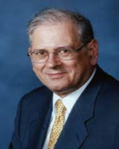
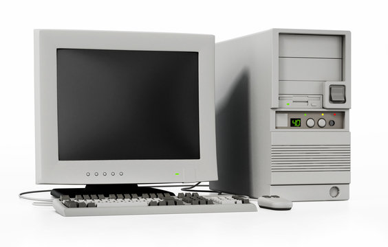

|
|||
Back to the mainpage |
 |
 |
 |
|  |  |
||
Douglas Engelbart (January 30, 1925 - July 2, 2013)American engineer and computer scientist who played a prominent role in the field of interactive computer interfaces and human-computer interaction. One of his most important contributions was the development of the mouse, which we now know as an essential tool for using a computer. Please, take a look around our site and discover the content that can help you. Thank you for being with us, and we hope you will have an inspiring and valuable experience here on the Legends of the Internet page. Computer Mouse: Engelbart worked at the Stanford Research Institute (today SRI International), where in 1963 he developed a device called the mouse, which became the forerunner of interactive computer work. In addition to the mouse, Engelbart also introduced other important technologies, such as the concept of "augmented human intelligence". The "Mother of All Demos": Engelbart is credited with one of the most important technology presentations in history, the "Mother of All Demos". In 1968, he demonstrated the use of the mouse, interactive computer graphics, hypertext, online video conferencing and other innovative technologies at a presentation in San Francisco. This presentation significantly contributed to the beginning of the IT revolution. Stanford Research Institute: Engelbart conducted important research at Stanford Research Institute (SRI) by establishing a group called the Augmentation Research Center (ARC) aimed at improving effective human-computer interaction. Xerox PARC: Engelbart later joined Xerox PARC (Xerox Palo Alto Research Center Incorporated) where he worked on further innovations and formulated the principles of environmental design. Honors and Recognition: Engelbart has received numerous honors, including the National Medal of Technology, the American Academy of Engineering Lifetime Achievement Award, and the Computing Immortality Award. Douglas Engelbart contributed to the development of information technology and pioneered the development of technologies that are now an everyday part of IT devices. Source: Wikipedia, AI |
|||